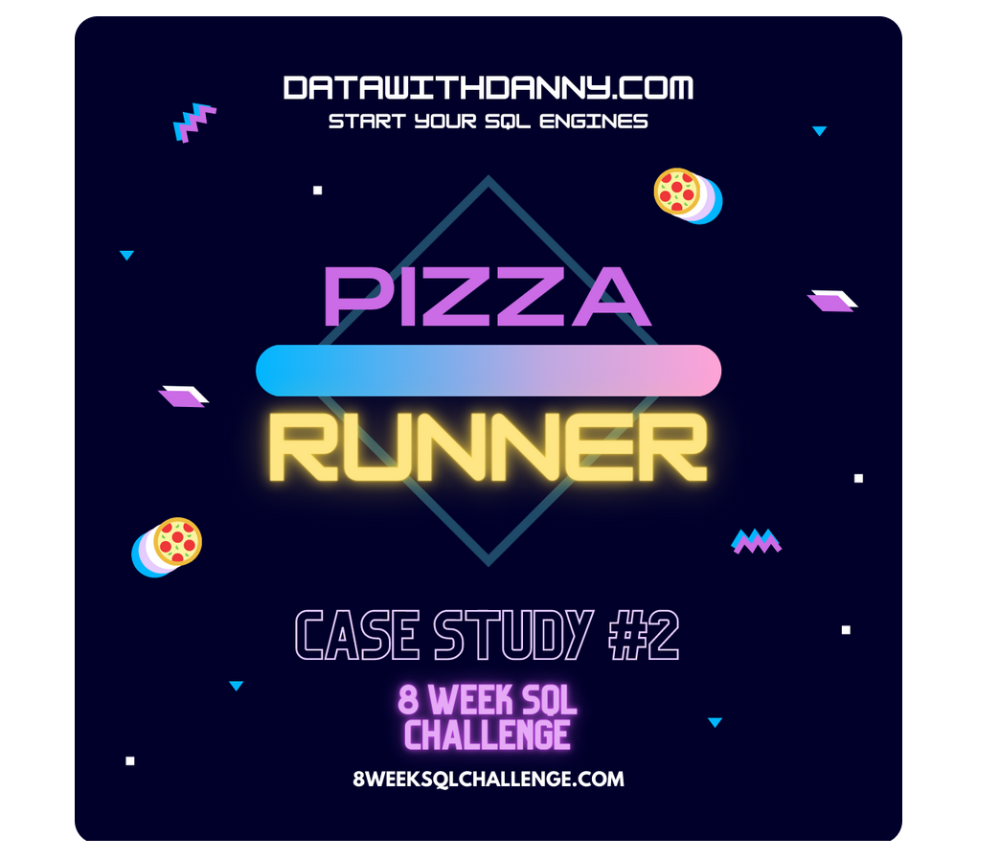
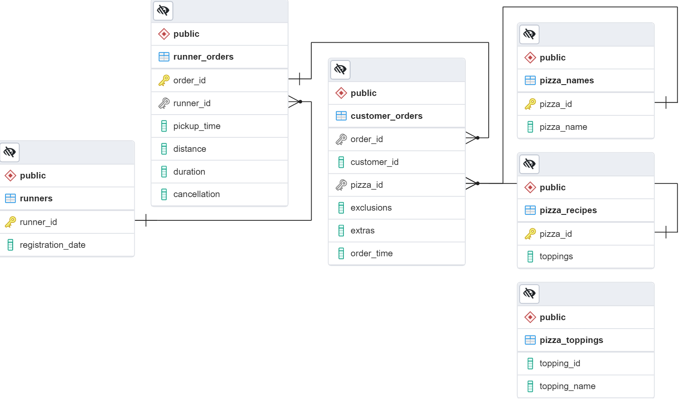

Foreword
A few words before we start. This is the second 8 Week SQL Challenge made by Danny My. For more information please visit his web page. I am very grateful for this opportunity to practice SQL skills Thanks Danny! Here I will try to solve the challenge and present my solutions.
For the purposes of this project, I’ve created the local pizza_runner Postgres database on my machine and run the .sql script to create and populate the tables.
Setting up the programming environment
# loading packages
library(DBI)
library(RPostgres)The sql engine uses the DBI package to execute SQL queries, print their results, and optionally assign the results to a data frame. To use the sql engine, you first need to establish a DBI connection to a database (typically via the DBI::dbConnect() function).
Creating a connection to the pizza_runner database
mycon <- DBI::dbConnect(RPostgres::Postgres(),
dbname = "pizza_runner",
host = "localhost",
port = "5432",
user = rstudioapi::askForPassword("Database username"),
password = rstudioapi::askForPassword("Database password"))There are several options to secure your credentials in R. Here I use prompting for credentials via rstudioapi.
mycon<PqConnection> pizza_runner@localhost:5432Introduction
Did you know that over 115 million kilograms of pizza is consumed daily worldwide??? (Well according to Wikipedia anyway…)
Danny was scrolling through his Instagram feed when something really caught his eye - “80s Retro Styling and Pizza Is The Future!”
Danny was sold on the idea, but he knew that pizza alone was not going to help him get seed funding to expand his new Pizza Empire - so he had one more genius idea to combine with it - he was going to Uberize it - and so Pizza Runner was launched!
Danny started by recruiting “runners” to deliver fresh pizza from Pizza Runner Headquarters (otherwise known as Danny’s house) and also maxed out his credit card to pay freelance developers to build a mobile app to accept orders from customers.
Entity Relationship Diagram
After running the .sql file to create and populate the tables, I’ve noticed that the primary and foreign keys are not defined. So I made the following ERD in pgAdmin 4 (a GUI tool used to interact with the Postgres database sessions, both locally and remote servers as well).

Data Cleaning
Data issues in the existing schema include:
customer_orderstablenullvalues entered as text- using both
NaNandnullvalues
runner_orderstablenullvalues entered as text- using both
NaNandnullvalues - units manually entered in
distanceanddurationcolumns
Let’s preview these two tables.
SELECT *
FROM pizza_runner.customer_orders| order_id | customer_id | pizza_id | exclusions | extras | order_time |
|---|---|---|---|---|---|
| 1 | 101 | 1 | 2020-01-01 18:05:02 | ||
| 2 | 101 | 1 | 2020-01-01 19:00:52 | ||
| 3 | 102 | 1 | 2020-01-02 23:51:23 | ||
| 3 | 102 | 2 | NA | 2020-01-02 23:51:23 | |
| 4 | 103 | 1 | 4 | 2020-01-04 13:23:46 | |
| 4 | 103 | 1 | 4 | 2020-01-04 13:23:46 | |
| 4 | 103 | 2 | 4 | 2020-01-04 13:23:46 | |
| 5 | 104 | 1 | null | 1 | 2020-01-08 21:00:29 |
| 6 | 101 | 2 | null | null | 2020-01-08 21:03:13 |
| 7 | 105 | 2 | null | 1 | 2020-01-08 21:20:29 |
SELECT *
FROM pizza_runner.runner_orders| order_id | runner_id | pickup_time | distance | duration | cancellation |
|---|---|---|---|---|---|
| 1 | 1 | 2020-01-01 18:15:34 | 20km | 32 minutes | |
| 2 | 1 | 2020-01-01 19:10:54 | 20km | 27 minutes | |
| 3 | 1 | 2020-01-03 00:12:37 | 13.4km | 20 mins | NA |
| 4 | 2 | 2020-01-04 13:53:03 | 23.4 | 40 | NA |
| 5 | 3 | 2020-01-08 21:10:57 | 10 | 15 | NA |
| 6 | 3 | null | null | null | Restaurant Cancellation |
| 7 | 2 | 2020-01-08 21:30:45 | 25km | 25mins | null |
| 8 | 2 | 2020-01-10 00:15:02 | 23.4 km | 15 minute | null |
| 9 | 2 | null | null | null | Customer Cancellation |
| 10 | 1 | 2020-01-11 18:50:20 | 10km | 10minutes | null |
customer_orders
- Converting
nullandNaNvalues into blanks''inexclusionsandextras- Blanks indicate that the customer requested no extras/exclusions for the pizza, whereas
nullvalues would be ambiguous.
- Blanks indicate that the customer requested no extras/exclusions for the pizza, whereas
- Saving the transformations in a temporary table
- We want to avoid permanently changing the raw data via
UPDATEcommands if possible.
- We want to avoid permanently changing the raw data via
CREATE TABLE IF NOT EXISTS pizza_runner.customer_orders_cln AS (
SELECT
order_id,
customer_id,
pizza_id,
CASE
WHEN exclusions IS NULL
OR exclusions LIKE 'null' THEN ''
ELSE exclusions
END AS exclusions,
CASE
WHEN extras IS NULL
OR extras LIKE 'null' THEN ''
ELSE extras
END AS extras,
order_time
FROM pizza_runner.customer_orders
)SELECT *
FROM pizza_runner.customer_orders_cln| order_id | customer_id | pizza_id | exclusions | extras | order_time |
|---|---|---|---|---|---|
| 1 | 101 | 1 | 2020-01-01 18:05:02 | ||
| 2 | 101 | 1 | 2020-01-01 19:00:52 | ||
| 3 | 102 | 1 | 2020-01-02 23:51:23 | ||
| 3 | 102 | 2 | 2020-01-02 23:51:23 | ||
| 4 | 103 | 1 | 4 | 2020-01-04 13:23:46 | |
| 4 | 103 | 1 | 4 | 2020-01-04 13:23:46 | |
| 4 | 103 | 2 | 4 | 2020-01-04 13:23:46 | |
| 5 | 104 | 1 | 1 | 2020-01-08 21:00:29 | |
| 6 | 101 | 2 | 2020-01-08 21:03:13 | ||
| 7 | 105 | 2 | 1 | 2020-01-08 21:20:29 |
runner_orders
- Converting
'null'text values into null values forpickup_time,distanceandduration - Extracting only numbers and decimal spaces for the distance and duration columns
- Use regular expressions and
NULLIFto convert non-numeric entries to null values
- Use regular expressions and
- Converting blanks,
'null'andNaNinto null values for cancellation - Saving the transformations in a temporary table
CREATE TABLE IF NOT EXISTS pizza_runner.runner_orders_cln AS (
SELECT
order_id,
runner_id,
CASE WHEN pickup_time LIKE 'null' THEN null ELSE pickup_time END::timestamp AS pickup_time,
NULLIF(regexp_replace(distance, '[^0-9.]','','g'), '')::numeric AS distance,
NULLIF(regexp_replace(duration, '[^0-9.]','','g'), '')::numeric AS duration,
CASE WHEN cancellation IN ('null', 'NaN', '') THEN null ELSE cancellation END AS cancellation
FROM pizza_runner.runner_orders
)SELECT *
FROM pizza_runner.runner_orders_cln| order_id | runner_id | pickup_time | distance | duration | cancellation |
|---|---|---|---|---|---|
| 1 | 1 | 2020-01-01 18:15:34 | 20.0 | 32 | NA |
| 2 | 1 | 2020-01-01 19:10:54 | 20.0 | 27 | NA |
| 3 | 1 | 2020-01-03 00:12:37 | 13.4 | 20 | NA |
| 4 | 2 | 2020-01-04 13:53:03 | 23.4 | 40 | NA |
| 5 | 3 | 2020-01-08 21:10:57 | 10.0 | 15 | NA |
| 6 | 3 | NA | NA | NA | Restaurant Cancellation |
| 7 | 2 | 2020-01-08 21:30:45 | 25.0 | 25 | NA |
| 8 | 2 | 2020-01-10 00:15:02 | 23.4 | 15 | NA |
| 9 | 2 | NA | NA | NA | Customer Cancellation |
| 10 | 1 | 2020-01-11 18:50:20 | 10.0 | 10 | NA |
Let’s preview the other four tables.
runners
SELECT *
FROM pizza_runner.runners| runner_id | registration_date |
|---|---|
| 1 | 2021-01-01 |
| 2 | 2021-01-03 |
| 3 | 2021-01-08 |
| 4 | 2021-01-15 |
pizza_names
SELECT *
FROM pizza_runner.pizza_names| pizza_id | pizza_name |
|---|---|
| 1 | Meatlovers |
| 2 | Vegetarian |
pizza_recipes
SELECT *
FROM pizza_runner.pizza_recipes| pizza_id | toppings |
|---|---|
| 1 | 1, 2, 3, 4, 5, 6, 8, 10 |
| 2 | 4, 6, 7, 9, 11, 12 |
pizza_toppings
SELECT *
FROM pizza_runner.pizza_toppings| topping_id | topping_name |
|---|---|
| 1 | Bacon |
| 2 | BBQ Sauce |
| 3 | Beef |
| 4 | Cheese |
| 5 | Chicken |
| 6 | Mushrooms |
| 7 | Onions |
| 8 | Pepperoni |
| 9 | Peppers |
| 10 | Salami |
Case Study Questions
This case study has LOTS of questions - they are broken up by area of focus including:
- A. Pizza Metrics
- B. Runner and Customer Experience
- C. Ingredient Optimisation
- D. Pricing and Ratings
- E. Bonus DML Challenges (DML = Data Manipulation Language)
A. Pizza Metrics
- How many pizzas were ordered?
- How many unique customer orders were made?
- How many successful orders were delivered by each runner?
- How many of each type of pizza was delivered?
- How many Vegetarian and Meatlovers were ordered by each customer?
- What was the maximum number of pizzas delivered in a single order?
- For each customer, how many delivered pizzas had at least 1 change and how many had no changes?
- How many pizzas were delivered that had both exclusions and extras?
- What was the total volume of pizzas ordered for each hour of the day?
- What was the volume of orders for each day of the week?
A. Q1
How many pizzas were ordered?
SELECT
COUNT(*) AS pizza_count
FROM pizza_runner.customer_orders_cln| pizza_count |
|---|
| 14 |
A. Q2
How many unique customer orders were made?
SELECT
COUNT(DISTINCT order_id) AS order_count
FROM pizza_runner.customer_orders_cln| order_count |
|---|
| 10 |
A. Q3
How many successful orders were delivered by each runner?
SELECT
runner_id,
COUNT(order_id) AS successful_orders
FROM pizza_runner.runner_orders_cln
WHERE cancellation IS NULL
GROUP BY runner_id| runner_id | successful_orders |
|---|---|
| 1 | 4 |
| 2 | 3 |
| 3 | 1 |
A. Q4
How many of each type of pizza was delivered?
SELECT
pizza_name,
COUNT(pizza_id) AS count
FROM pizza_runner.runner_orders_cln
JOIN pizza_runner.customer_orders_cln
USING (order_id)
JOIN pizza_runner.pizza_names
USING (pizza_id)
WHERE cancellation IS NULL
GROUP BY pizza_name
ORDER BY pizza_name| pizza_name | count |
|---|---|
| Meatlovers | 9 |
| Vegetarian | 3 |
A. Q5
How many Vegetarian and Meatlovers were ordered by each customer?
SELECT
customer_id,
SUM(CASE WHEN pizza_id = 1 THEN 1 ELSE 0 END) AS meatlovers,
SUM(CASE WHEN pizza_id = 2 THEN 1 ELSE 0 END) AS vegetarian
FROM pizza_runner.customer_orders_cln
GROUP BY 1
ORDER BY 1| customer_id | meatlovers | vegetarian |
|---|---|---|
| 101 | 2 | 1 |
| 102 | 2 | 1 |
| 103 | 3 | 1 |
| 104 | 3 | 0 |
| 105 | 0 | 1 |
A. Q6
What was the maximum number of pizzas delivered in a single order?
SELECT MAX(pizza_count) AS max_count
FROM (
SELECT
order_id,
COUNT(*) AS pizza_count
FROM pizza_runner.runner_orders_cln
JOIN pizza_runner.customer_orders_cln
USING (order_id)
WHERE cancellation IS NULL
GROUP BY 1
) AS subq;| max_count |
|---|
| 3 |
A. Q7
For each customer, how many delivered pizzas had at least 1 change and how many had no changes?
SELECT
customer_id,
SUM(CASE WHEN exclusions = '' AND extras = '' THEN 1 ELSE 0 END) AS no_change,
SUM(CASE WHEN exclusions != '' OR extras != '' THEN 1 ELSE 0 END) AS change
FROM pizza_runner.runner_orders_cln
JOIN pizza_runner.customer_orders_cln
USING (order_id)
WHERE cancellation IS NULL
GROUP BY 1| customer_id | no_change | change |
|---|---|---|
| 101 | 2 | 0 |
| 102 | 3 | 0 |
| 103 | 0 | 3 |
| 104 | 1 | 2 |
| 105 | 0 | 1 |
A. Q8
How many pizzas were delivered that had both exclusions and extras?
SELECT
SUM(CASE WHEN exclusions != '' AND extras != '' THEN 1 ELSE 0 END)
AS excl_and_extras_count
FROM pizza_runner.runner_orders_cln
JOIN pizza_runner.customer_orders_cln
USING (order_id)
WHERE cancellation IS NULL| excl_and_extras_count |
|---|
| 1 |
A. Q9
What was the total volume of pizzas ordered for each hour of the day?
SELECT
DATE_PART('hour', order_time) AS hour,
COUNT(*) AS pizza_count
FROM pizza_runner.customer_orders_cln
GROUP BY 1
ORDER BY 1| hour | pizza_count |
|---|---|
| 11 | 1 |
| 13 | 3 |
| 18 | 3 |
| 19 | 1 |
| 21 | 3 |
| 23 | 3 |
A. Q10
What was the volume of orders for each day of the week?
Note: day of the week (0 - 6; Sunday is 0)
SELECT
DATE_PART('dow', order_time) AS dow,
TO_CHAR(order_time, 'Day') AS day_of_week,
COUNT(*) AS pizza_count
FROM pizza_runner.customer_orders_cln
GROUP BY 1, 2
ORDER BY 1| dow | day_of_week | pizza_count |
|---|---|---|
| 3 | Wednesday | 5 |
| 4 | Thursday | 3 |
| 5 | Friday | 1 |
| 6 | Saturday | 5 |
B. Runner and Customer Experience
- How many runners signed up for each 1 week period? (i.e. week starts 2021-01-01)
- What was the average time in minutes it took for each runner to arrive at the Pizza Runner HQ to pickup the order?
- Is there any relationship between the number of pizzas and how long the order takes to prepare?
- What was the average distance travelled for each customer?
- What was the difference between the longest and shortest delivery times for all orders?
- What was the average speed for each runner for each delivery and do you notice any trend for these values?
- What is the successful delivery percentage for each runner?
B. Q1
How many runners signed up for each 1 week period? (i.e. week starts 2021-01-01)
WITH runner_signups AS (
SELECT
runner_id,
registration_date,
registration_date - ((registration_date - '2021-01-01') % 7) AS start_of_week
FROM pizza_runner.runners
)
SELECT
start_of_week,
COUNT(runner_id) AS signups
FROM runner_signups
GROUP BY start_of_week
ORDER BY start_of_week| start_of_week | signups |
|---|---|
| 2021-01-01 | 2 |
| 2021-01-08 | 1 |
| 2021-01-15 | 1 |
B. Q2
What was the average time in minutes it took for each runner to arrive at the Pizza Runner HQ to pickup the order?
WITH t1 AS (
SELECT
order_id,
runner_id,
DATE_PART('minute', pickup_time - order_time)::numeric +
DATE_PART('second', pickup_time - order_time)::numeric / 60
AS pickup_time
FROM pizza_runner.runner_orders_cln
JOIN pizza_runner.customer_orders_cln
USING (order_id)
WHERE cancellation IS NULL
GROUP BY 1, 2, 3
ORDER BY 1
)
SELECT
runner_id,
ROUND(AVG(pickup_time), 1) AS avg_pickup_time
FROM t1
GROUP BY 1
ORDER BY 1| runner_id | avg_pickup_time |
|---|---|
| 1 | 14.3 |
| 2 | 20.0 |
| 3 | 10.5 |
B. Q3
Is there any relationship between the number of pizzas and how long the order takes to prepare?
WITH t1 AS (
SELECT
order_id,
COUNT(pizza_id) pizza_count,
AVG(pickup_time - order_time) AS pickup_time
FROM pizza_runner.customer_orders_cln
JOIN pizza_runner.runner_orders_cln
USING (order_id)
WHERE cancellation IS NULL
GROUP BY order_id
ORDER BY order_id
)
SELECT
pizza_count,
ROUND(AVG(DATE_PART('minute', pickup_time)::numeric +
DATE_PART('second', pickup_time)::numeric / 60), 1) AS avg_pickup_time
FROM t1
GROUP BY pizza_count
ORDER BY pizza_count| pizza_count | avg_pickup_time |
|---|---|
| 1 | 12.4 |
| 2 | 18.4 |
| 3 | 29.3 |
B. Q4
What was the average distance travelled for each runner?
SELECT
runner_id,
ROUND(AVG(distance), 1) AS avg_distance
FROM pizza_runner.runner_orders_cln
GROUP BY runner_id
ORDER BY runner_id| runner_id | avg_distance |
|---|---|
| 1 | 15.9 |
| 2 | 23.9 |
| 3 | 10.0 |
B. Q5
What was the difference between the longest and shortest delivery times for all orders?
SELECT
MAX(duration) - MIN(duration) AS difference
FROM pizza_runner.runner_orders_cln| difference |
|---|
| 30 |
B. Q6
What was the average speed for each runner for each delivery and do you notice any trend for these values?
SELECT
order_id,
runner_id,
distance,
duration,
COUNT(pizza_id) pizza_count,
ROUND(distance / (duration/60), 1) AS speed
FROM pizza_runner.customer_orders_cln
JOIN pizza_runner.runner_orders_cln
USING (order_id)
WHERE cancellation IS NULL
GROUP BY 1, 2, 3, 4
ORDER BY runner_id, pizza_count| order_id | runner_id | distance | duration | pizza_count | speed |
|---|---|---|---|---|---|
| 2 | 1 | 20.0 | 27 | 1 | 44.4 |
| 1 | 1 | 20.0 | 32 | 1 | 37.5 |
| 10 | 1 | 10.0 | 10 | 2 | 60.0 |
| 3 | 1 | 13.4 | 20 | 2 | 40.2 |
| 7 | 2 | 25.0 | 25 | 1 | 60.0 |
| 8 | 2 | 23.4 | 15 | 1 | 93.6 |
| 4 | 2 | 23.4 | 40 | 3 | 35.1 |
| 5 | 3 | 10.0 | 15 | 1 | 40.0 |
While the fastest delivery only carried 1 pizza and the slowest delivery carried 3 pizzas, there is no clear trend that more pizzas slow down the delivery speed of an order.
B. Q7
What is the successful delivery percentage for each runner?
SELECT
runner_id,
COUNT(order_id) AS ordered,
COUNT(pickup_time) AS delivered,
COUNT(pickup_time)::numeric/COUNT(order_id)*100 AS delivery_percentage
FROM pizza_runner.runner_orders_cln
GROUP BY runner_id
ORDER BY runner_id| runner_id | ordered | delivered | delivery_percentage |
|---|---|---|---|
| 1 | 4 | 4 | 100 |
| 2 | 4 | 3 | 75 |
| 3 | 2 | 1 | 50 |
dbDisconnect(mycon)